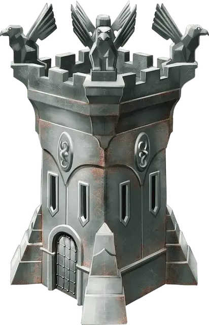

Мгновенная крепость Даэрн
Daern’s Instant Fortress
Чудесный предмет, редкий (требуется настройка)

Рекомендованная стоимость 4 000 ЗМ
Действием Магия вы можете разместить эту адамантиновую статуэтку размером 1 дюйм на земле и произнести командное слово: статуэтка быстро вырастает в адамантиновую башню с квадратным основанием. Если повторить это командное слово, башня снова станет статуэткой, но только если башня пуста. Существа, находящиеся там, где вырастает башня, отталкиваются в незанятое пространство рядом с границей башни, как и находящиеся там объекты, которые никто не несёт и не носит.
Высота башни составляет 30 футов, а длина стороны квадрата основания — 20 футов. На всех стенах расположены бойницы, а крыша защищена зубчатым парапетом. Внутри башни пространство разделено на два этажа, соединённых трапом или лестницей, приставной или обычной (на ваш выбор); этот трап или лестница оканчиваются люком, ведущим на крышу. При создании башни в ней есть только одна дверь, на первом этаже, на стороне, обращённой к вам. Эта дверь открывается только если вы Бонусным действием произнесёте такой приказ. Дверь невосприимчива к заклинанию Стук и аналогичной магии.
Магия не даёт башне быть опрокинутой. Крыша, дверь и каждая из стен обладают 100 Хитов, 20 КЗ, Иммунитетом к Дробящему, Колющему и Рубящему урону, за исключением наносимого осадным орудием, а также Сопротивлением всему прочему урону. Возвращение башни в форму статуэтки не отменяет урон, нанесённый башне; её можно починить только заклинанием Желание, и такое использование этого заклинания считается дублированием заклинания 8-го уровня или ниже. Каждое сотворение Желания восстанавливает все Хиты башни.